통관, 보세화물, 관리화물 등 용어
물품의 반입, 검사
M/BL, H/BL, 선사 D/O, 포딩 D/O, 유산스
물품반입 유형, 물품반출 유형, 선용품 관련
미래소프트 보세프로그램
pdf파일전체보기
특허보세구역운영에관한고시
자율관리보세구역운영에관한고시
보세화물입출항하선하기및적재에관한고시
보세화물관리에관한고시
컨테이너관리에관한고시
관리대상화물관리에관한고시
보세운송에관한고시
세관 부호, 조직도, 업무분장, 연락처
유니패스란? 로그인, 인증서등록, 화물조회
문서재수신(1개월 내), 재고다운로드, ?고지서?
특허보세구역, 자율관리보세구역, 게시 의무
▢ 통관절차는 수입신고(통관신청) 조건을 갖추기 위한 과정입니다.
▢ 수입신고(통관신청)은 반입(전)후 관련기관의 수입검사를 모두 완료한 후에 합니다.
1. 보세, 보세화물, 보세구역, 특허보세구역, 보세운송, 관리화물
※ 보세운송승인 물품은 창고에서 반입예정물품 목록으로 수신되어 쉽게 확인이 됩니다.
※ 보세운송승인 물품은 창고에서 해상수입물품의 경우 컨테이너는 승인일로부터 보통 10일이내,
벌크화물은 3일이내 반입신고 완료하여야 합니다.
(보세운송에관한 고시 제1장 제6조(보세운송기간))
기한내 반입이 어려울 경우 CY에 있는 경우 보세운송신고 당사자가 연장신청하고,
창고에 도착한 물품의 경우 창고의 반입지연 사유서를 첨부하여 보세운송신고 당사자가 연장신청 할 수 있습니다.
선박에 있는 화물은 보세구역을 하선장소로 지정하여 하선신고를 하게되는데
보통 부두의 접안시설 옆에있는 컨테이너야적장(CY)입니다.
하선신고는 보세운송처럼 창고에서 수신되는 반입예정정보에 뜨지 않기 때문에,
관리화물 등이 하선장소가 '동일냉장 보세구역'으로 지정이 되어 반입되는 경우에는
화주 등이 연락을 해줘야 알 수 있습니다.
※ 관리화물은 해당화물의 하선신고 장소를 동일냉장보세구역으로 하는것입니다.
관리화물은 세관에서 직접 물품을 보겠다는 의미입니다.
세관 직원의 입회 및 지시가 없이는 컨테이너 개봉금지입니다.
※ CY로 하선신고후 관리화물 지정시 CY로 하선신고된 내역을 취소후 동일냉장으로 하선신고 됩니다.
※ 하선신고 물품은 해상물품 컨테이너의 경우 3일이내(토,일 공휴일 등 노는날 제외???) 도착이 완료되어야 합니다.
(보세화물 입출항 하선 하기 및 적재에 관한 고시 제19조(하선장소 물품반입) 컨테이너화물 접안일로부터 3일이내 반입.)
※ 화주(관세사)에서 관리화물이 있다고 연락이 옵니다.
※ 세관담당자는 언제 작업할 것인지 시간조율 연락이 옵니다.
※ 전자seal이 부착되어 있으면 해제등록이 필요합니다.
특허보세구역의 종류는 다양합니다. 동일냉장은 특허보세구역 영업용보세창고 입니다.
일반화물 보관 + 보세화물 보관 가능합니다.
2. 보세화물의 통관(=통관절차를 완료한는 것)
각 주무부처(식약청, 검역원, 수품원 등)의 수출입절차(검사, 검역 등) 통과 등이
이상없이 진행된 후 수입신고(통관신청)을 하면,
세관에서 검토하여 이상이 없을시 관세등을 납부하면 수입신고가 승인이 됩니다.
통관신청(수입신고)이 승인되면 승인정보가 수신되고 창고에서 수입신고수리후반출신고하면
보세화물 상태에서 해제되고 반출(출고)할 수 있습니다. 일반화물(내국화물)로 분류됩니다.
출고의뢰를 받았을때 해당물품이 수입신고수리 및 수입신고수리후반출신고가 완료되었는지 확인해야합니다.
1. 먼저, 보세화물 종류별로 보관 및 반입조건이 있습니다. ※ 자세한 사항은 다른 관공서 정보 참고
○ 전제조건
① 특허보세구역 특허를 받은 공간(동결실 2곳 제외 창고내 전체)
② 수입식품등 보관업 영업등록된 공간(특허보세구역 특허 공간)
③ 식품보존업 영업신고된 공간(창고내 전체)
○ 수입축산물의 경우, 전제조건을 충족하고 AND
① 검역대상물품의 경우
A. 축산물 보관업 영업허가된 공간 : 102호, 103호, 201호, 301호, 401호방
B. A.중에 수입식용축산물보관장(검역시행장) 지정된 공간 (102호 제외)
※ 검역대상물품이 아닌 경우에 입고하면 안됩니다. (벌금)
※ 따라서 검역대상물품의 경우 ==> 103호, 201호, 301호, 401호방
② 검역대상물품이 아닌 경우
A. 축산물 보관업 영업허가된 공간 중에 검역시행장이 아닌 공간 : 102호
※ 수입산 치즈를 예를 들면 축산물로 분류되며 검역대상이 아닌 경우가 있습니다.
○ 수입식물류로 분류되는 경우, 전제조건을 충족하고 AND
① 수입식물류 검역장소로 지정된 공간. 보통 특허보세구역 특허 공간
※ 지정이 안되어 있는데 반입을 하면 벌금인지는 확인이 안됩니다.
※ 지정이 안되어 있으면 반입되었더라도 검사가 안되어서 다른창고로 보세운송하여 보내야 합니다.
A. 축산물 반입장소 제외 모두 가능
○ 축산물 제외한 물품(수입 및 내국)은 축산물보관장소 제외한 곳 중 제한없습니다.
① 전제조건을 충족한 공간 중에 수입축산물 보관장소 제외.
2. 통관절차중 : 보세화물 반입시, 반입후 관련기관의 수입검사


1. 화물관리번호, 해상화물의 운송계약, 선사와 M/BL, 포딩과 H/BL, B/L 보는법
A. 포워딩, 콘솔

B. 해상화물의 운송계약 예시


C. 해상화물의 운송계약 정리, 화물의 소유권
▸ 포워딩 업체가 발행한 House B/L은 선사가 가지고 있는 화물, 예들들어 CY에 도착한 화물을
인도 받을수 있는 서류가 아닙니다. 선사와 관련없는 서류이고 포딩과의 계약서류입니다.
▸ 관리화물인 경우 3일이내 반입이라는 관세법상 규칙때문에 선사의 D/O가 발행전이라도
물품이 반입될 수도 있고 이 경우 동일냉장에서 등록해놓은 물품의 화주가 진정한 화주가 아니고
선사의 원본 B/L 인수 및 D/O발행 전 까지는 선사의 소유임을 인지해야 합니다.
관리화물이 아닌 경우라면 선사는 원본 B/L 인수하고 D/O발행 원칙을 지키는 것으로 알고 있습니다.
▸ House B/L인 경우, 포워딩 업체가 선사에 원본 B/L 제시 및 선사의 D/O발행에 의해서 창고로
반입되겠지만, 이 경우에도 동일냉장에서 등록해 놓은 물품의 화주가 진정한 화주가 아니고
포워딩의 D/O발행 및 창고에서 확인하기전 까지는 포워딩의 소유임을 인지해야 합니다.
▸ ※ Master B/L 발행한 물품인지, House B/L 발행한 물품인지 확인을 한 번 해줘야하고,
그에 따라 확인해야 할 D/O를 인지하고 확인해야 하며,
이 후에도, 통관 전이라도 양도가 있으면 화주는 바뀔수 있습니다.
창고에서 수신되는 통관정보에는 화주정보도 있습니다. 반드시 확인 해야 할 정보입니다.

▸ 송금방식(T/T), 추심방식
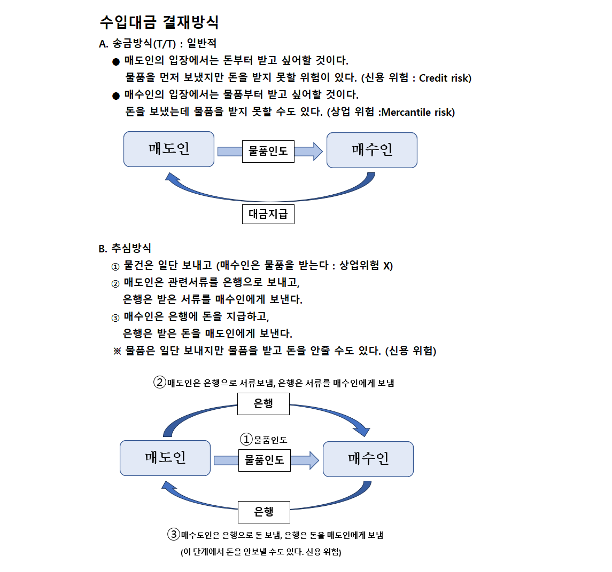▸ 신용장거래(은행의 지급보증) (유산스 Usance)
※ 유산스(Usance)란 일반적으로 신용장(L/C, Letter of Credit)방식에 의한
무역결제에 있어 어음의 지급기한을 의미하며,
수입자가 일정기간(통상 30일, 60일, 90일, 150일) 후에 수출대금을 지급하는 단기연불수입의 일종이다.
연불수입(수입 상품의 대금을 결제하는 방식의 하나.
선금 지급이나 전액 외상으로 수입 상품을 공급받고 대금은 일정 기간에 나누어 결제한다.)
※ L/G : Letter of Guarantee : 수입화물선취보증
신용장 거래방식에서 원본 B/L이 늦어질때 은행이 보증을 하여 원본 B/L이 도착하면
L/G와 교환할것을 약속하는 서류.
개설의뢰인(화주)는 이 서류를 원본 B/L처럼 선사에 제출하여 화물인 인도받습니다.
물류비용 발생 및 통관지연을 방지하기 위해 물품을 먼저 인도하고
원본 B/L이 도착하면 서로 교환하게 됩니다.
A. 신용장 개설 합의, 신용장 개설
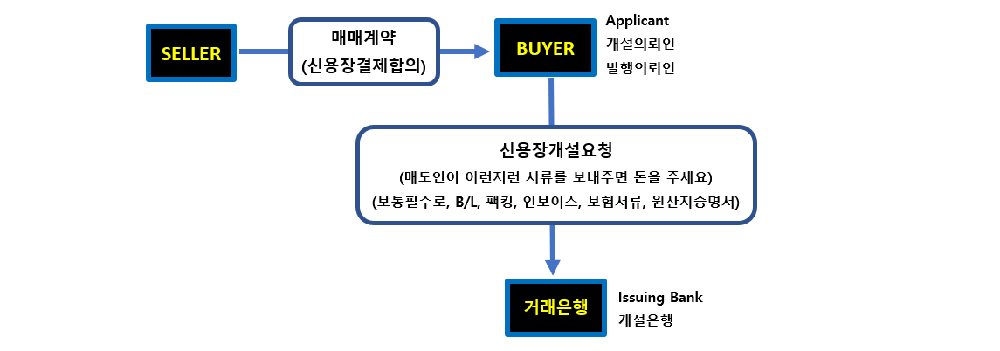B. 신용장을 Buyer에게 전달
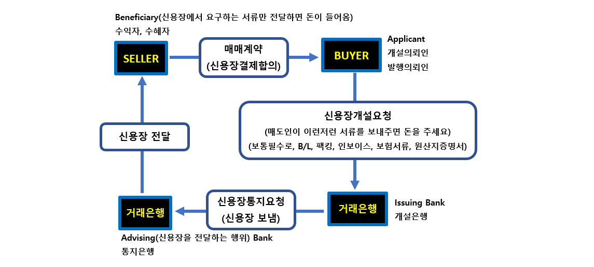C. 신용장에서 요구한 서류를 Seller에게서 받는 과정

D. Seller가 물품대금을 받는 과정
▸ 개설은행은 신용장에서 요구한 서류만을 심사하여 일치하면 통지은행에 대금을 지급한다.
▸ 대금을 지급받은 통지은행은 Seller에게 대금을 지급한다.
▸ Buyer는 전달받은 물품에 이상이 있더라고 대금지급과정에 관여할 수 없다.
E. 신용장거래방식의 특징
▸ 수익자 (Seller)
신용위험 회피
신용장을 담보로 대출을 받을수 있다. (무역금융)
▸ 개설의뢰인 (Buyer)
수수료가 많다
개설의뢰인에게는 좋은게 별로 없다고 설명함.
2000년 전에는 80%를 차지하다가 현재 10%정도라고 설명함.
▸ 은행
수수료를 높게 받는다고 설명함.
※ D/O 관련 대법원 판결정보
C. 해상화물의 운송계약 정리, 화물의 소유권 내용 참고
Master B/L의 경우 선사의 D/O를 받기전까지 화물은 선사에게 소유권이 있고,
House B/L의 경우 포딩의 D/O를 받기전까지 화물은 포딩에게 소유권이 있으니,
선사나 포딩과 소유권 분쟁에 휘말리지 않으려면 각 D/O를 챙겨서 확인하여야한다.
▢ 물품반입 유형 : 입항반입, 보세운송반입, B/L분할 반입
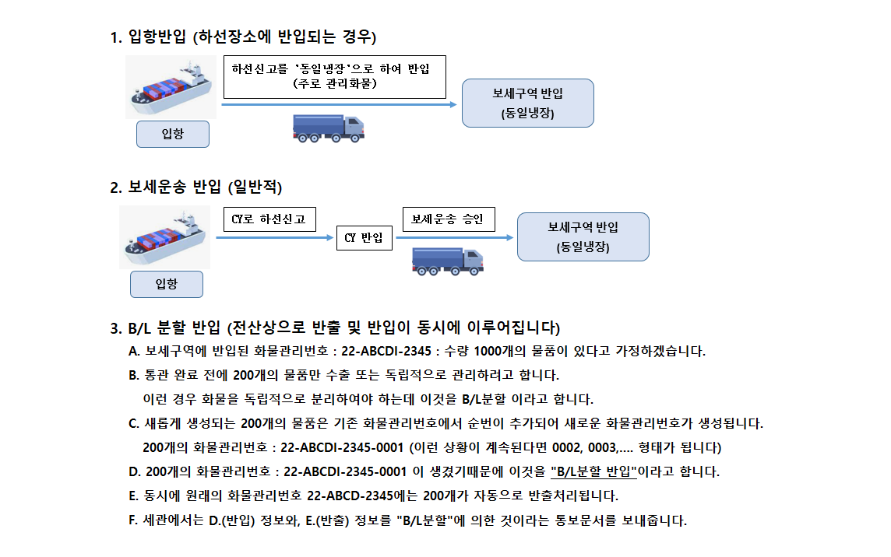▢ 물품반출 유형
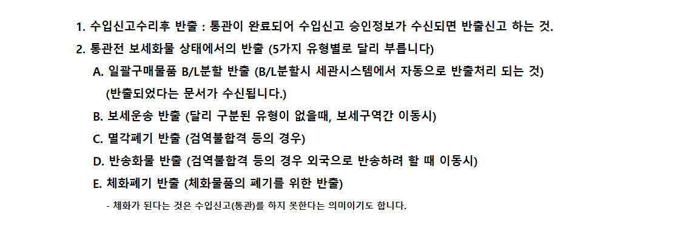▢ 선용품 관련 정보
▢ 영업프로그램 및 보세화물프로그램이 통합되어 있습니다.
▢ 로그인 방법과 간단한 메뉴설명만 하고 세부적인 사용법은 실무에서 다룹니다.
▢ 공인인증서를 등록하였다면 프로그램 종료시까지 유지됩니다.
1. 로그인 방법, 화면설명, 유니패스 송수신 메뉴 사용시 공인인증서 등록방법
A. 바탕화면에서 더블클릭
① 사번 입력후 엔터치면 우측에 이름이 나옵니다.
202203(김기수),202204(양충영), 202205(백명탁), 202206(차승환), 202207(김경아), 202208(김인애), 202209(윤하늬)
② 비밀번호 입력후 엔터 두번 치면 로그인 됩니다.
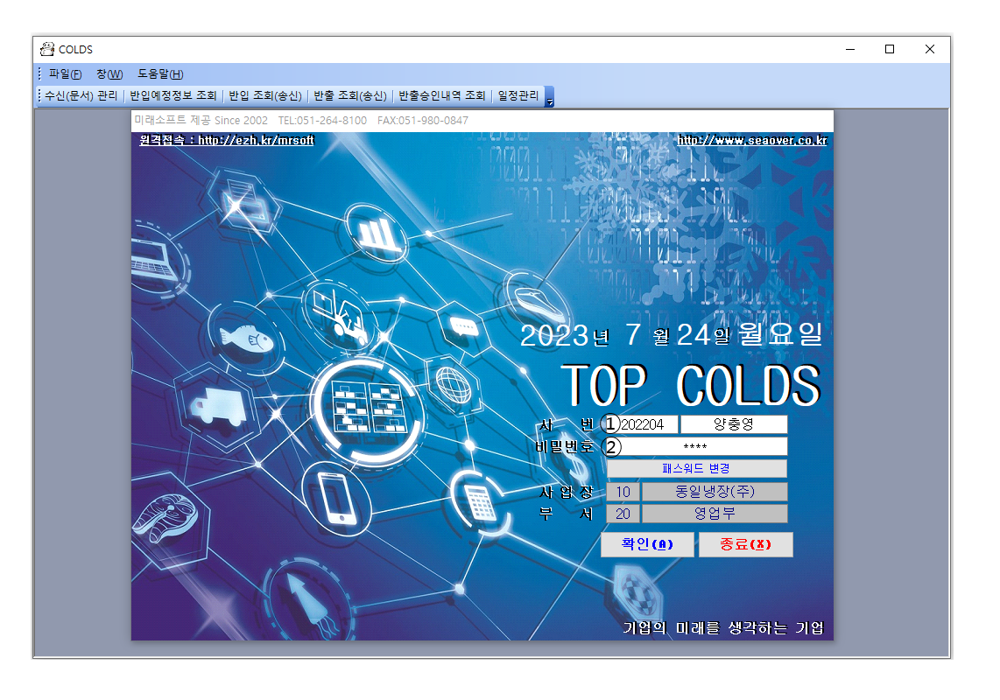B. 첫화면에 일정표와 유통기한경과물품 목록창이 뜨는데, 필요 없으면 닫습니다.

C. 처음화면입니다. 간단한 메뉴 설명입니다.
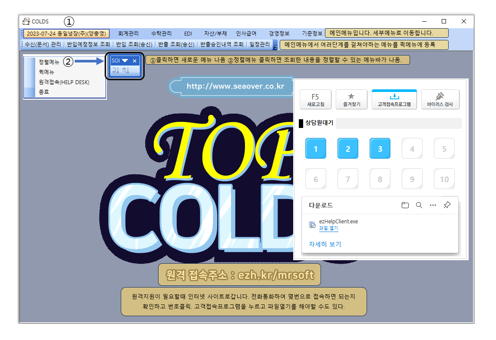D. 유니패스에 송수신되는 메뉴 사용시 인증서 로그인창이 뜹니다. (인증서 등록방법)
① 인증서위치 선택
② 인증서 선택
③ 인증서 비밀번호 입력, dongil3368
④ 확인

E. EDI(Electronic Data Interchange) : 전자문서교환, 보세화물 관련 문서입니다.
세관 유니패스와 관련된 모든 문서 및 송수신 결과 등 확인.
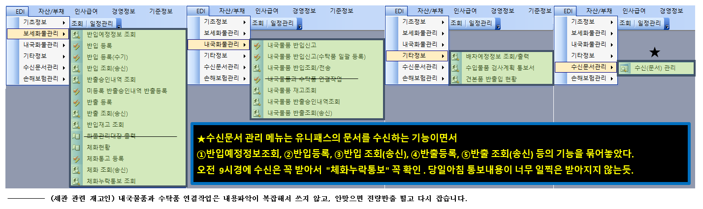F. 보세화물관리 메뉴
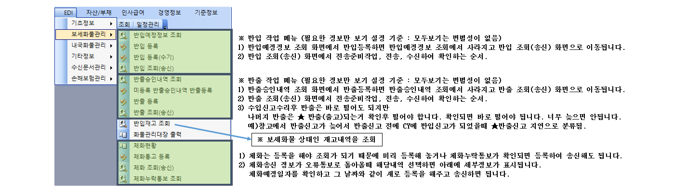G. 수신문서관리 메뉴

H. 기타정보 메뉴
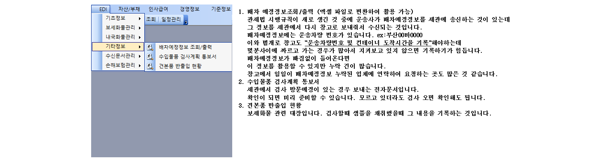I. 내국화물관리 메뉴

▢ 부산 본부세관 고유 부호 : 030, 동일냉장 고유 부호 : 11597
▢ 부산 본부세관 인터넷 검색하여 사이트 방문 (여기서는 우측 밝은색 조직도와 직원안내만 봅니다.)

1. 조직도 (우측 끝) "세관소개" => 조직 및 직원안내 => 조직도. (주로 연락하는 부서는 감시국 => "수출입물류과")
2. "감시국" 클릭했을때 나오는 분장업무중 "수출입물류과"의 분장업무들 "확인"
ㆍ보세구역의 지정 및 특허와 보세화물의 관리
ㆍ자유무역지역 및 종합보세구역의 관리
ㆍ수출입화물의 보관·운송 및 물류의 개선
ㆍ보세구역운영인·운송업자의 자율적 법규준수도의 측정 및 관리
ㆍ장치기간경과화물·몰수품 및 국고귀속물품의 관리·공매예정가격의 산출 및 매각
ㆍ외국인투자에 대한 통관지원
ㆍ권역내 세관의 통관업무에 대한 지도·감독
ㆍ통관에 관한 정보의 수집과 종합관리
ㆍ남북한 왕래자에 대한 휴대품검사 및 남북교역물품의 반출입관리
ㆍ기타 국내 다른 과의 주관에 속하지 아니하는 사항
3. 조직도 (우측 끝) "세관소개" => 조직 및 직원안내 => 직원안내 (★ 중요 ★)

4. 수출입물류과 담당업무 설명 (메인)
※ 특히 반출입관리는 반입물품 이상보고, 반입정정, 반출정정 업무가 빈번합니다.
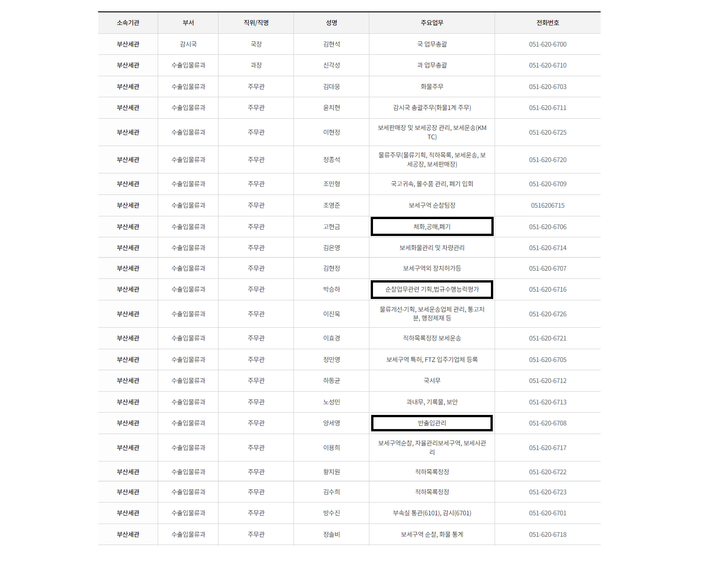① 클릭하면 전체보기가 되고 다시 누르면 원래대로 돌아갑니다.

▢ 특허보세구역운영에관한고시
▢ 자율관리보세구역운영에관한고시
▢ 보세화물입출항하선하기및적재에관한고시
▢ 보세화물관리에관한고시
▢ 컨테이너관리에관한고시
▢ 관리대상화물관리에관한고시
▢ 보세운송에관한고시
▢ 부산 본부세관 고유 부호 : 030, 동일냉장 고유 부호 : 11597
▢ 부산 본부세관 인터넷 검색하여 사이트 방문 (여기서는 우측 밝은색 조직도와 직원안내만 봅니다.)
1. 조직도 (우측 끝) "세관소개" => 조직 및 직원안내 => 조직도. (주로 연락하는 부서는 감시국 => "수출입물류과")
2. "감시국" 클릭했을때 나오는 분장업무중 "수출입물류과"의 분장업무들 "확인"
ㆍ보세구역의 지정 및 특허와 보세화물의 관리
ㆍ자유무역지역 및 종합보세구역의 관리
ㆍ수출입화물의 보관·운송 및 물류의 개선
ㆍ보세구역운영인·운송업자의 자율적 법규준수도의 측정 및 관리
ㆍ장치기간경과화물·몰수품 및 국고귀속물품의 관리·공매예정가격의 산출 및 매각
ㆍ외국인투자에 대한 통관지원
ㆍ권역내 세관의 통관업무에 대한 지도·감독
ㆍ통관에 관한 정보의 수집과 종합관리
ㆍ남북한 왕래자에 대한 휴대품검사 및 남북교역물품의 반출입관리
ㆍ기타 국내 다른 과의 주관에 속하지 아니하는 사항
3. 조직도 (우측 끝) "세관소개" => 조직 및 직원안내 => 직원안내 (★ 중요 ★)
4. 수출입물류과 담당업무 설명 (메인)
※ 특히 반출입관리는 반입물품 이상보고, 반입정정, 반출정정 업무가 빈번합니다.
▢ 유니패스(UNIPASS)
"다양한 관세 서비스를 통합"한다는 뜻의 UNI와 "전자시스템으로 원스톱 처리"한다는
뜻의 pass를 합친 말입니다.
유니패스는 물품의 수출입 신고, 세금 납부, 화물 검사 등 통관 절차를 전산시스템으로 자동화한 것으로
따로 세관을 방문하거나 서류를 작성할 필요 없이 인터넷을 통해 처리해주는 시스템입니다
▢ UNIPASS를 통해서 전자문서 제출하는 업무들 예시.
A. 보세화물의 반출입신고, 반출입신고의 정정 및 취소 신청, 반입물품 이상보고 등
▸ 미래소프트 보세관리 프로그램은 유니패스의 문서들을 땡겨와서 보여주는 것입니다.
▸ 보세관리 프로그램이 오류 등으로 세관의 문서를 땡겨오지 못하여 발생하는 신고누락 등의 책임은
전적으로 창고에 있습니다.
▸ 송신=문서제출이고 그 결과를 알려줍니다. 접수=접수, 오류통보=무효입니다.
▸ 승인통보, 체화통고 등 다양한 정보를 알려줍니다.
1. UNIPASS 로그인 방법, ID:go4323, password:!dongil3368, 공인인증서password:dongil3368
주소 : https://unipass.customs.go.kr/csp/index.do
가. 로그인 방법 : 사이트방문 - ① 로그인 클릭

나. 로그인방법 : 공인인증서 화면 전까지 ① ② ③ ④

다. 로그인 방법 : 공인인증서 화면 ① ② ③ ④
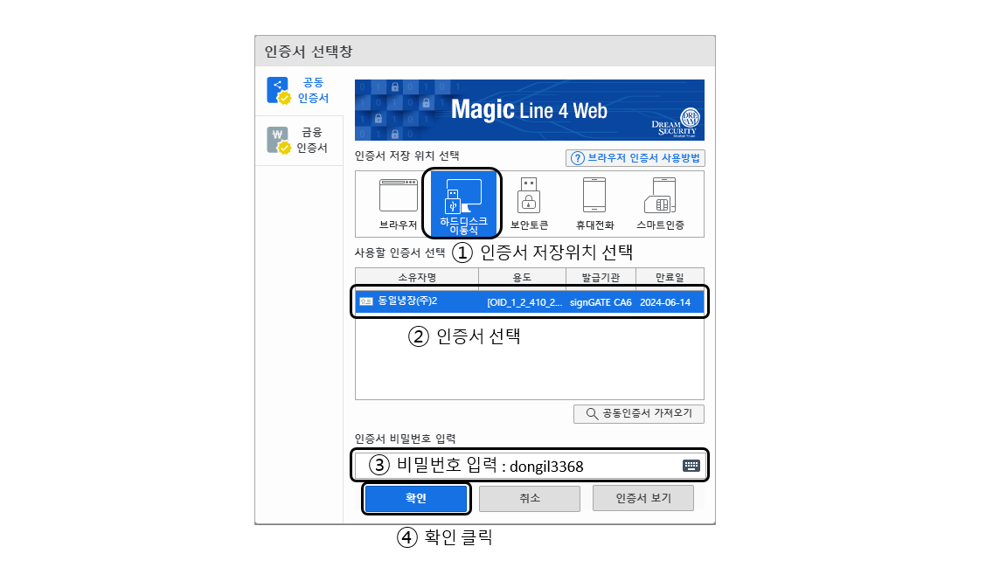2. (로그인 후) 공인인증서 등록. 창고 보세프로그램도 같은 공인인증서를 사용합니다.
3. 화물조회 (수입화물진행정보 확인방법)
1. (로그인 안해도 상관없음) 유니패스 - 관세청 사이트 방문
2. "화물진행정보조회 메뉴"에서 ① Master B/L 번호 또는 House B/L 번호 입력 후 조회
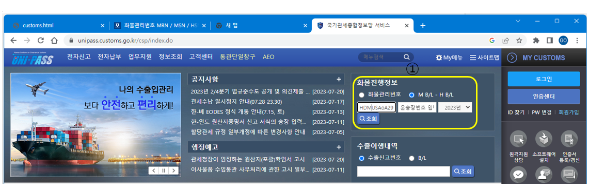3. 조회결과화면 예시

1. (공인인증서 로그인 후) 문서함에서 문서 재수신 방법
① My메뉴 클릭, ② 문서함 사용관리 클릭, ③ 수신문서함 클릭, ④ 수신현황 클릭, ⑤ 수신기간 설정,
⑥조회 클릭, ⑦ 재수신 받을 문서 선택, ⑧ 재수신 클릭, ⑨ 재수신 처리하시겠습니까? 확인 클릭,
⑩ 정상적으로 처리되었습니다. 확인 클릭, ⑪ 보세프로그램에서 수신하면 다시 수신됩니다.
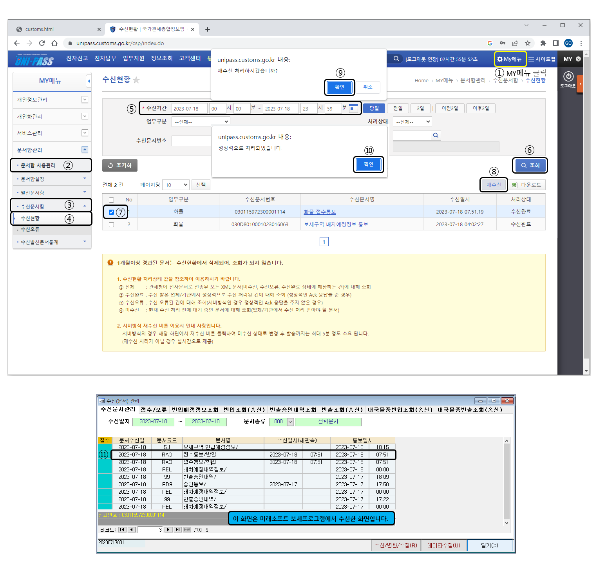2. 보세화물 재고, 내국화물 재고 다운로드 (재고조사할때 이 자료와 일치해야 합니다.)
▢ (공인인증서 로그인 후) 보세구역 재고현황 다운로드

▢ (공인인증서 로그인 후) 내국물품 반출입 재고현황 다운로드

▢ 특허보세구역과 자율관리보세구역
1. 자율관리보세구역이란 특허보세구역을 운영하는 업체가
가. 보세화물관리를 위한 보세사 채용.
나. 화물의 반출입, 재고관리 등 실시간 물품관리가 가능한 전산시스템(WMS, ERP EMD) 구비.
다. 운영인 등의 법규수행능력이 우수하여 보세구역 자율관리에 지장이 없다고 판단되는 업체를
자율관리보세구역으로 세관이 지정할 수 있다.
※ 특허보세구역의 법규수행능력평가 점수가 3년평균 A등급이상을 유지하는 업체
2. 자율관리보세구역 혜택
※자율관리 보세구역 운영에 관한 고시 제7조(절차생략 등)
가. 식품위생법 제10조, 축산물 위생관리법 제6조에 따른 표시작업(원산지표시 제외) 할때 보수작업 신청(승인) 생략.
▸ 예 ) 축산물 입고시 한글스티커 부착작업 할 때 보수작업의 신청(승인) 없이 자율적으로 할 수 있습니다.
▸ 예 ) 다른식품도 한글스티커 작업할때 자율적으로 하는 부분들입니다.
단, ★원산지 표시가 누락되었을 경우에 원산지를 표시하는 작업은 보수작업 신청(승인) 받아야 됩니다.
★보수작업 대장 작성, 보수작업 완료보고서 제출, 작업 전 후 사진 등록 등 하여야 합니다.
나. 보세화물 관리에 관한 고시 제16조에 따른 재고조사 및 보고의무를 분기별 1회에서 년 1회로 완화
※ 특허보세구역 운영상황의 보고 기한이 다가오면 세관에서 공문을 보내주는데 요구서류에
재고조사보고서 등을 요청하는데 이것이 그 1회보고가 됩니다.
요청을 안하면 직접 보고해야 합니다. 운영상황의 보고 공문 도착시 이부분을 확인하고,
법령에 정한 보고사항 등의 체크리스트에 체크해 놓습니다.
★ 또한 운영상황의 보고 날짜는 법규수행능력평가때 날짜를 기재하므로 체크해 두어야 합니다.
다. 특허보세구역 운영에 관한 고시 제22조에 따른 보세구역 운영상황의 점검생략
▸ 특허보세구역 운영에 관한 고시 제20조(보세구역 운영상황의 보고)를 2월말까지 하는데,
그 보고내용이 일치하는지와 운영상황에 문제가 없는지 방문조사하게 되어있는데 생략한다는 것입니다.
라. 보세화물 관리에 관한 고시 제17조에 따른 장치물품 수입신고 전 확인신청(승인) 생략
▸ 화주 등이 물품 반입시 검품 등을 할때 '장치물품의 수입신고 전 확인신청(승인)'을 받아야
물품을 볼 수 있는데 그 신청(승인)을 생략한다는 것입니다.
★ 그러나 그 물품을 '장치물품 수입신고 전 확인대장'에 기록관리는 해야합니다.
▢ 특허보세구역 운영에 관한 고시 제16조(특허장의 게시 등)
① 운영인은 보세구역 내 일정한 장소에 다음 각 호의 사항을 게시하여야 한다.
가. 별지 제2호서식의 특허장
나. 보관요율(자가용보세창고는 제외한다) 및 보관규칙
다. 화재보험요율
라. 자율관리보세구역지정서
마. 위험물품장치허가증 등 관계 행정기관의 장의 허가, 승인 또는 등록증
(위험물품, 식품류를 보관하는 보세구역에 한정한다)
② 운영인은 보세구역 입구에 별표 1과 같은 간판을 게시하고 민원인출입구, 울타리 등 필요한 장소에
별표 2와 같은 안내문을 게시하여야 한다.